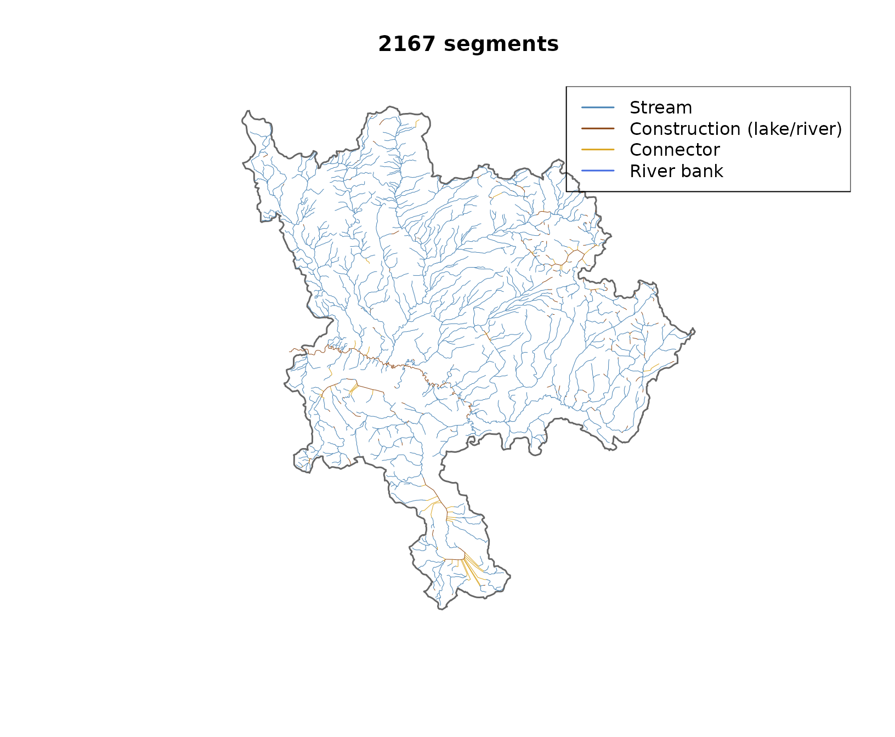
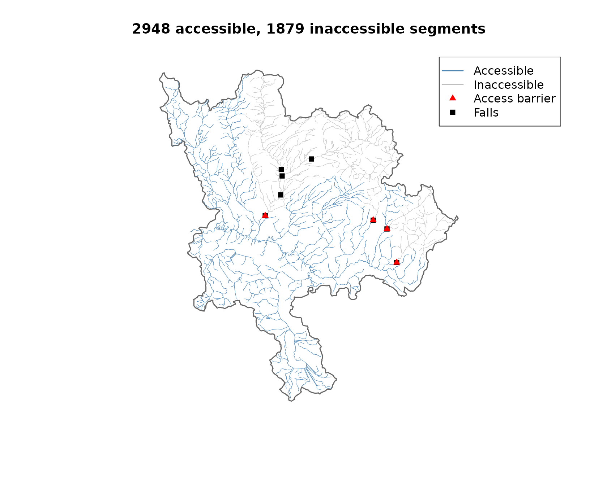
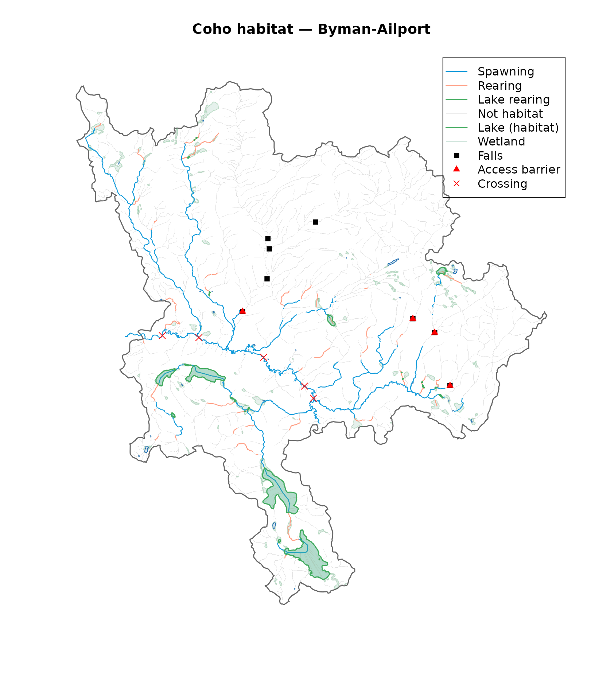
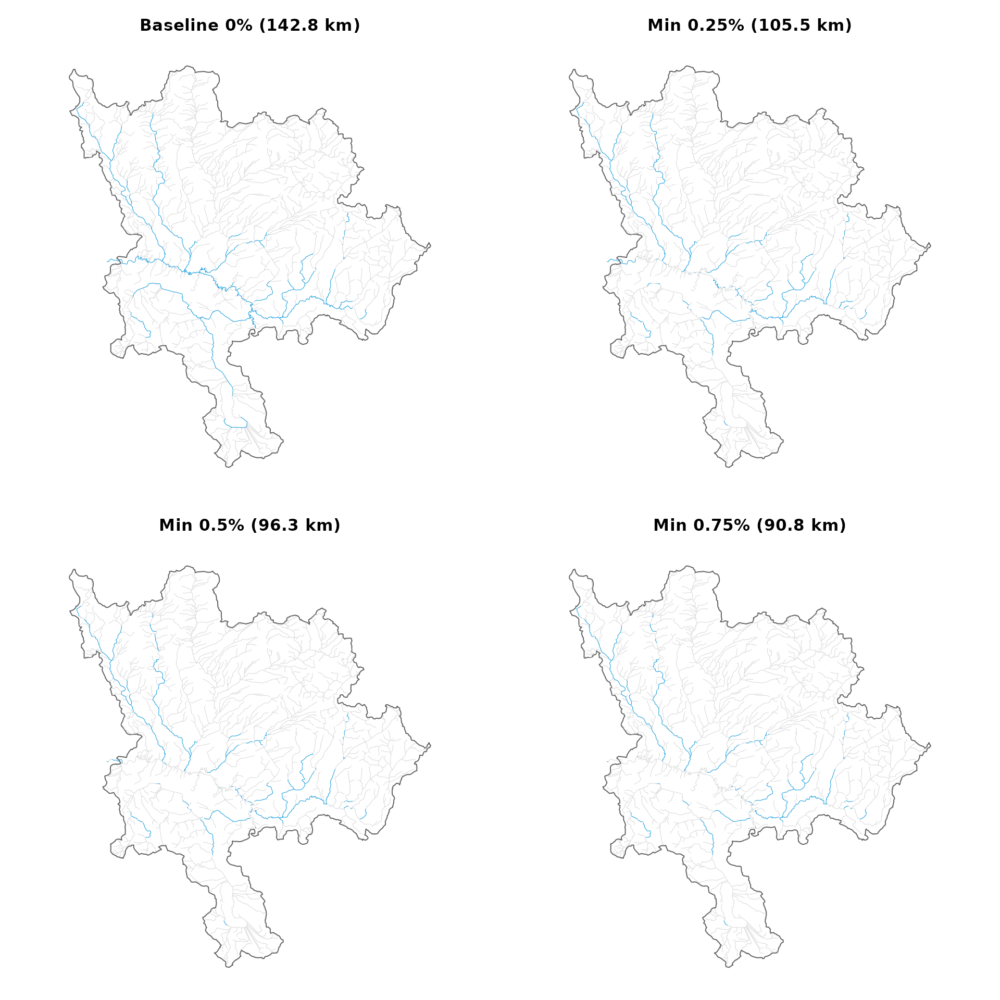

Classifying Habitat Based on Accessibility and Intrinsic Habitat Potential
Source:vignettes/habitat-pipeline.Rmd
habitat-pipeline.RmdWe classify coho salmon habitat on a subbasin of the Neexdzii Kwa
(Upper Bulkley River) in the traditional territory of the Wet’suwet’en.
The pipeline runs on PostgreSQL — R orchestrates SQL, the database
handles the geometry. Data generated by
data-raw/vignette_habitat_pipeline.R.
library(fresh)
library(sf)
#> Linking to GEOS 3.12.1, GDAL 3.8.4, PROJ 9.4.0; sf_use_s2() is TRUE
sf_use_s2(FALSE)
#> Spherical geometry (s2) switched off
d <- readRDS(system.file("extdata", "byman_ailport_habitat.rds",
package = "fresh"))
before <- d$before; classified <- d$classified
breaks_access_sf <- d$breaks_access_sf
waterbodies <- d$waterbodies; all_wb <- d$all_wb
crossings <- d$crossings; agg <- d$agg; scenarios <- d$scenarios
aoi <- d$aoi; falls <- d$fallsParameters
Habitat thresholds come from two bundled CSVs. The first mirrors the
bcfishpass
defaults — spawning and rearing gradient, channel width, and MAD
thresholds per species. The second holds fresh-specific parameters:
access gradient thresholds (hardcoded per species group in bcfishpass model_access_*.sql)
and minimum spawning gradients. Conceptually, salmonids do not spawn in
flat water so we are experimenting with a default set at 0.25%. Load
with frs_params().
params_all <- frs_params(csv = system.file("extdata",
"parameters_habitat_thresholds.csv", package = "fresh"))
params_co <- params_all$CO
params_fresh <- read.csv(system.file("extdata",
"parameters_fresh.csv", package = "fresh"))
co_fresh <- params_fresh[params_fresh$species_code == "CO", ]Study area
The study area is defined by a blue line key and two downstream route
measures. frs_watershed_at_measure()
delineates the watershed polygon between them — network subtraction, no
spatial clipping.
aoi <- frs_watershed_at_measure(conn, blk, drm_byman,
upstream_measure = drm_ailport)Extract and enrich
frs_network(to=)
writes the stream network to a working table on the database. frs_col_join()
adds channel width from the FWA lookup table. frs_col_generate()
converts gradient to a PostgreSQL generated column so it auto-recomputes
when geometry is split by breaks.
conn |>
frs_network(blk, drm_byman, upstream_measure = drm_ailport,
to = "working.byman_habitat") |>
frs_col_join("working.byman_habitat",
from = "fwa_stream_networks_channel_width",
cols = c("channel_width", "channel_width_source"),
by = "linear_feature_id") |>
frs_col_generate("working.byman_habitat")
et <- frs_edge_types()
before$et_cat <- et$category[match(before$edge_type, et$edge_type)]
cols_et <- c(stream = "steelblue", construction = "#8B4513",
connector = "#DAA520", river = "#4169E1")
before$col <- cols_et[before$et_cat]
before$col[is.na(before$col)] <- "grey60"
plot(sf::st_geometry(aoi), border = "grey40", lwd = 1.5,
main = paste(nrow(before), "segments"))
plot(sf::st_geometry(before), col = before$col, lwd = 0.5, add = TRUE)
legend("topright",
legend = c("Stream", "Construction (lake/river)", "Connector", "River bank"),
col = c("steelblue", "#8B4513", "#DAA520", "#4169E1"), lwd = 1.5)
Stream network coloured by edge type. Construction lines (brown) are centrelines through lakes and double-line rivers. Single-line streams (blue) carry the main flow.
Access barriers
Two sources: gradient barriers and falls. frs_break_find()
with the attribute mode samples slope at 100m intervals and identifies
locations where gradient exceeds the species threshold (15% for coho).
frs_break_find() with the table mode pulls barrier falls
from the database. Both write to the same breaks table. frs_break_apply()
splits the stream geometry at those locations and frs_classify()
labels everything upstream of a barrier as inaccessible.
frs_break_find(conn, "working.byman_habitat",
attribute = "gradient", threshold = co_fresh$access_gradient_max,
to = "working.breaks_access")
frs_break_find(conn, "working.byman_habitat",
points_table = "bcfishpass.falls_vw",
where = "barrier_ind = TRUE", aoi = aoi,
to = "working.breaks_access", append = TRUE)
frs_break_apply(conn, "working.byman_habitat",
breaks = "working.breaks_access")
frs_classify(conn, "working.byman_habitat", label = "accessible",
breaks = "working.breaks_access")
cols_acc <- ifelse(classified$accessible %in% TRUE, "steelblue", "grey75")
plot(sf::st_geometry(aoi), border = "grey40", lwd = 1.5,
main = paste(sum(classified$accessible %in% TRUE), "accessible,",
sum(!classified$accessible %in% TRUE), "inaccessible segments"))
plot(sf::st_geometry(classified), col = cols_acc, lwd = 0.5, add = TRUE)
if (nrow(falls) > 0) {
plot(sf::st_geometry(falls), pch = 15, col = "black", cex = 1, add = TRUE)
}
if (nrow(breaks_access_sf) > 0) {
plot(sf::st_geometry(breaks_access_sf), pch = 17, col = "red", cex = 1, add = TRUE)
}
legend("topright",
legend = c("Accessible", "Inaccessible", "Access barrier", "Falls"),
col = c("steelblue", "grey75", "red", "black"),
lwd = c(1.5, 1.5, NA, NA), pch = c(NA, NA, 17, 15))
Accessible (blue) and inaccessible (grey) reaches. Red triangles mark access barriers. Black squares are all known falls.
Habitat classification
Only accessible segments get habitat labels. Spawning requires
gradient 0–5.49% and channel width >= 2m. Rearing requires gradient
0–5.49% and channel width >= 1.5m. Lake rearing uses channel width on
lake-connected segments — recovering habitat that bcfishpass scores as
zero. frs_classify()
labels each segment, then frs_categorize()
collapses the boolean columns into a single habitat_type
for mapping.
conn |>
frs_classify("working.byman_habitat", label = "co_spawning",
ranges = list(gradient = c(0, params_co$spawn_gradient_max),
channel_width = params_co$ranges$spawn$channel_width),
where = "accessible IS TRUE") |>
frs_classify("working.byman_habitat", label = "co_rearing",
ranges = params_co$ranges$rear[c("gradient", "channel_width")],
where = "accessible IS TRUE") |>
frs_classify("working.byman_habitat", label = "co_lake_rearing",
ranges = list(channel_width = params_co$ranges$rear$channel_width),
where = "accessible IS TRUE AND waterbody_key IN (...)") |>
frs_categorize("working.byman_habitat",
label = "habitat_type",
cols = c("co_spawning", "co_rearing", "co_lake_rearing", "accessible"),
values = c("CO_SPAWNING", "CO_REARING", "CO_LAKE_REARING", "ACCESSIBLE"),
default = "INACCESSIBLE")Subbasin totals from frs_aggregate()
at the outlet point (Table @ref(tab:tab-summary), Figure
@ref(fig:plot-habitat)):
totals <- agg[agg$id == "subbasin_total", ]
knitr::kable(totals[, c("total_km", "accessible_km", "spawning_km",
"rearing_km", "lake_rearing_km")],
row.names = FALSE,
caption = "Subbasin habitat totals (km). Spawning uses bcfishpass baseline (gradient 0-5.49%).")| total_km | accessible_km | spawning_km | rearing_km | lake_rearing_km |
|---|---|---|---|---|
| 964.7 | 638 | 142.8 | 180.8 | 13.9 |
habitat_labels <- c(CO_SPAWNING = "Spawning", CO_REARING = "Rearing",
CO_LAKE_REARING = "Lake rearing", ACCESSIBLE = "None", INACCESSIBLE = "None")
hab <- habitat_labels[classified$habitat_type]
hab[is.na(hab)] <- "None"
classified$habitat <- factor(hab,
levels = c("Spawning", "Rearing", "Lake rearing", "None"))
cols_habitat <- c(Spawning = "#129bdb", Rearing = "#ff9f85",
"Lake rearing" = "#41AB5D", None = "grey80")
plot(sf::st_geometry(aoi), border = "grey40", lwd = 1.5,
main = "Coho habitat — Byman-Ailport")
if (nrow(all_wb$wetlands) > 0) {
plot(sf::st_geometry(all_wb$wetlands), col = "#a3cdb944", border = "#238B4544", add = TRUE)
}
if (nrow(all_wb$lakes) > 0) {
plot(sf::st_geometry(all_wb$lakes), col = "#dcecf4", border = "#2171B5", add = TRUE)
}
for (h in c("None", "Lake rearing", "Rearing", "Spawning")) {
sub <- classified[classified$habitat == h, ]
if (nrow(sub) > 0) {
plot(sf::st_geometry(sub), col = cols_habitat[h],
lwd = if (h == "None") 0.3 else 1.2, add = TRUE)
}
}
if (nrow(waterbodies$lakes) > 0) {
plot(sf::st_geometry(waterbodies$lakes), col = "#41AB5D44", border = "#41AB5D", lwd = 1.5, add = TRUE)
}
if (nrow(falls) > 0) {
plot(sf::st_geometry(falls), pch = 15, col = "black", cex = 1, add = TRUE)
}
if (nrow(breaks_access_sf) > 0) {
plot(sf::st_geometry(breaks_access_sf), pch = 17, col = "red", cex = 1, add = TRUE)
}
if (nrow(crossings) > 0) {
plot(sf::st_geometry(crossings), pch = 4, col = "red", cex = 1.2, add = TRUE)
}
legend("topright",
legend = c("Spawning", "Rearing", "Lake rearing", "Not habitat",
"Lake (habitat)", "Wetland", "Falls", "Access barrier", "Crossing"),
col = c(cols_habitat[c("Spawning", "Rearing", "Lake rearing", "None")],
"#41AB5D", "#a3cdb9", "black", "red", "red"),
lwd = c(1.2, 1.2, 1.2, 0.3, 1.5, 0.5, NA, NA, NA),
pch = c(NA, NA, NA, NA, NA, NA, 15, 17, 4))
Coho habitat classification within accessible reaches.
Lake rearing
bcfishpass scores lake-connected segments as rearing = 0
(bcfishpass#408).
With fresh we experiment to understand what changes when we classify
them independently using channel width thresholds and waterbody key
filtering (Table @ref(tab:tab-lake-gap)).
fr_lr <- classified[classified$co_lake_rearing %in% TRUE, ]
lake_gap <- data.frame(
Source = c("bcfishpass", "fresh"),
`Lake rearing (km)` = c(0,
as.numeric(round(sum(sf::st_length(fr_lr)) / 1000, 1))),
check.names = FALSE)
knitr::kable(lake_gap, caption = "Lake rearing: bcfishpass scores 0 km, fresh recovers habitat via channel width thresholds.")| Source | Lake rearing (km) |
|---|---|
| bcfishpass | 0.0 |
| fresh | 13.9 |
Spawning scenarios
The bcfishpass baseline classifies all segments with gradient 0–5.49% and channel width >= 2m as spawning habitat — including flat water. Raising the minimum gradient excludes low-gradient reaches where salmonids are unlikely to spawn (Figure @ref(fig:plot-scenarios)).
par(mfrow = c(2, 2), mar = c(1, 1, 3, 1))
spawn_km <- function(col) {
sub <- scenarios[scenarios[[col]] %in% TRUE, ]
round(as.numeric(sum(sf::st_length(sub))) / 1000, 1)
}
for (lbl in c("co_spawning", "co_spawn_025", "co_spawn_05", "co_spawn_075")) {
km <- spawn_km(lbl)
title <- switch(lbl,
co_spawning = paste0("Baseline 0% (", km, " km)"),
co_spawn_025 = paste0("Min 0.25% (", km, " km)"),
co_spawn_05 = paste0("Min 0.5% (", km, " km)"),
co_spawn_075 = paste0("Min 0.75% (", km, " km)"))
cols <- ifelse(scenarios[[lbl]] %in% TRUE, "#129bdb", "grey85")
plot(sf::st_geometry(aoi), border = "grey40", lwd = 1, main = title)
plot(sf::st_geometry(scenarios), col = cols, lwd = 0.5, add = TRUE)
}
Spawning habitat under four minimum gradient thresholds. Blue segments are classified as spawning within accessible reaches.
Habitat quantification upstream of any point on the stream network
frs_aggregate()
traverses the network upstream from any set of points and sums habitat
lengths. Here we aggregate upstream of road/stream crossings —
structures (culverts or bridges) identified by
aggregated_crossings_id from bcfishpass (Table
@ref(tab:tab-aggregate)).
agg_crossings <- agg[agg$id != "subbasin_total", ]
if (nrow(agg_crossings) > 0) {
knitr::kable(
agg_crossings[, c("id", "total_km", "accessible_km", "spawning_km",
"rearing_km", "lake_rearing_km")],
row.names = FALSE, col.names = c("Crossing ID", "Total", "Accessible",
"Spawning", "Rearing", "Lake rearing"),
caption = "Habitat upstream of crossings (km). Spawning uses bcfishpass baseline (gradient 0-5.49%).")
}| Crossing ID | Total | Accessible | Spawning | Rearing | Lake rearing |
|---|---|---|---|---|---|
| 1024704487 | 477.2 | 417.3 | 87.5 | 113.4 | 13.4 |
| 1024704554 | 953.5 | 626.8 | 141.0 | 178.7 | 13.9 |
| 1024704556 | 840.3 | 513.7 | 112.0 | 144.1 | 13.9 |
| 1024704562 | 175.7 | 175.7 | 31.8 | 43.3 | 11.3 |
| 1024704564 | 359.8 | 299.9 | 68.7 | 88.9 | 12.7 |
Next steps
This pipeline scales to any AOI — watershed groups, multiple regions,
or province-wide. The classified network feeds into flooded
(floodplain delineation using upstream area and mean annual
precipitation from frs_col_join())
and drift
(land cover change within floodplain extents).